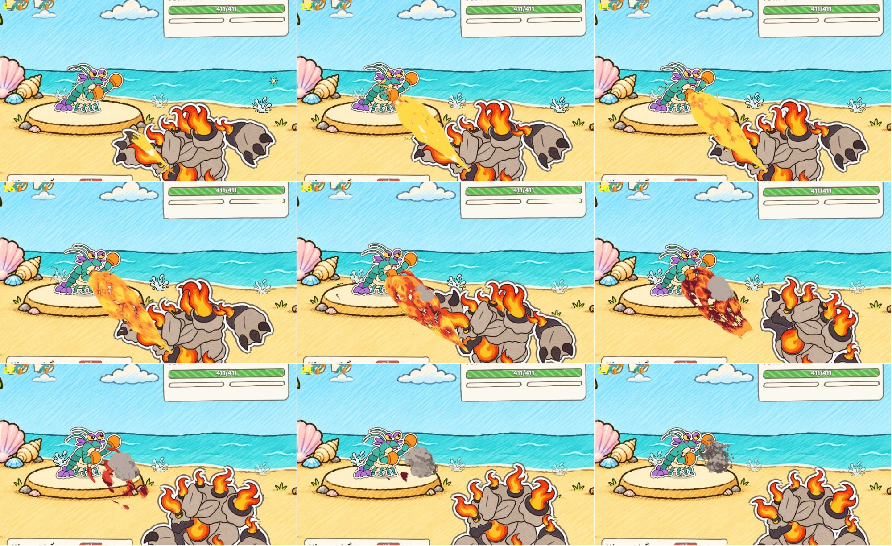
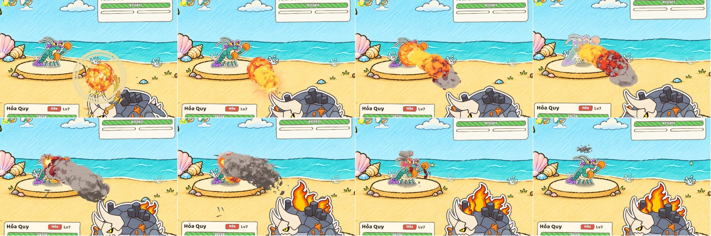
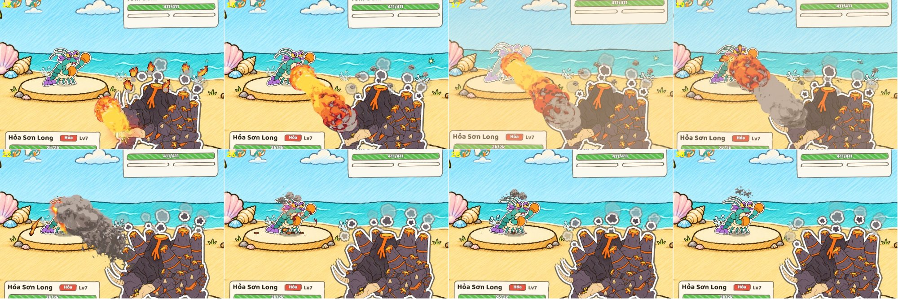
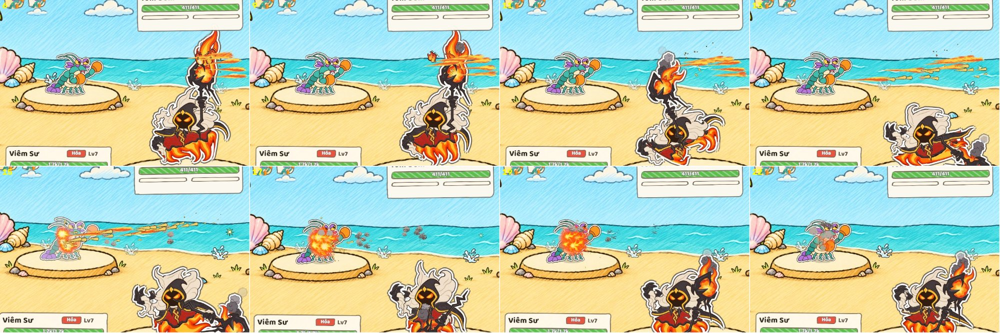
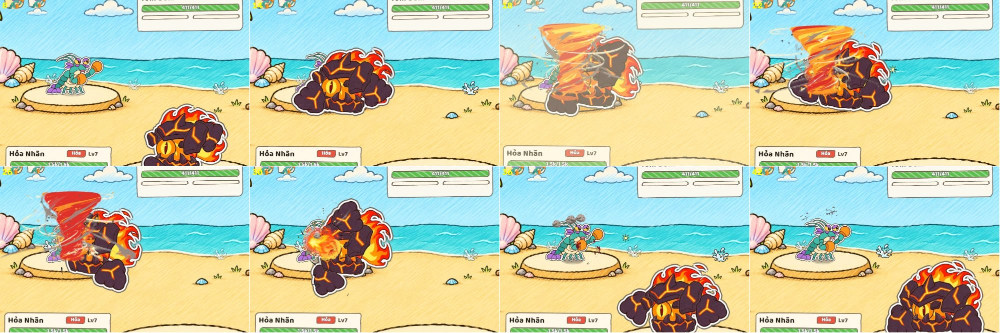
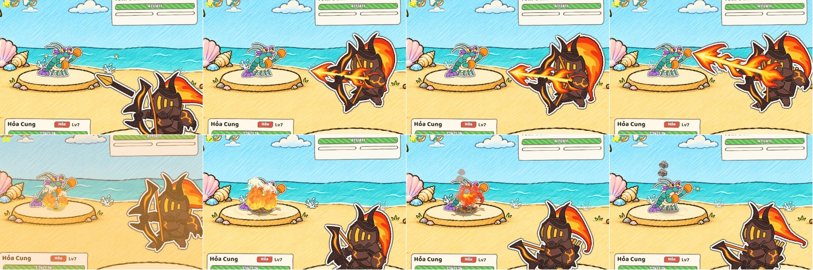
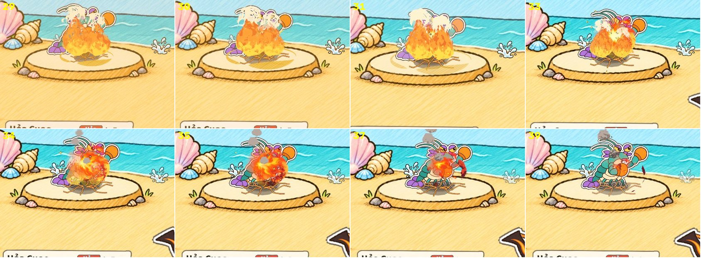
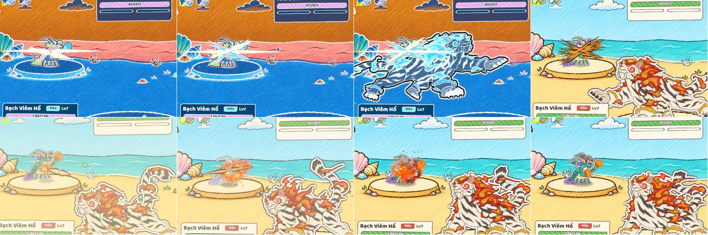
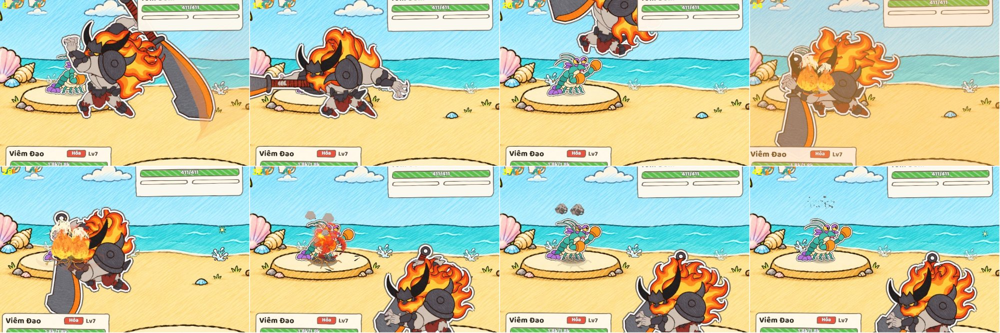
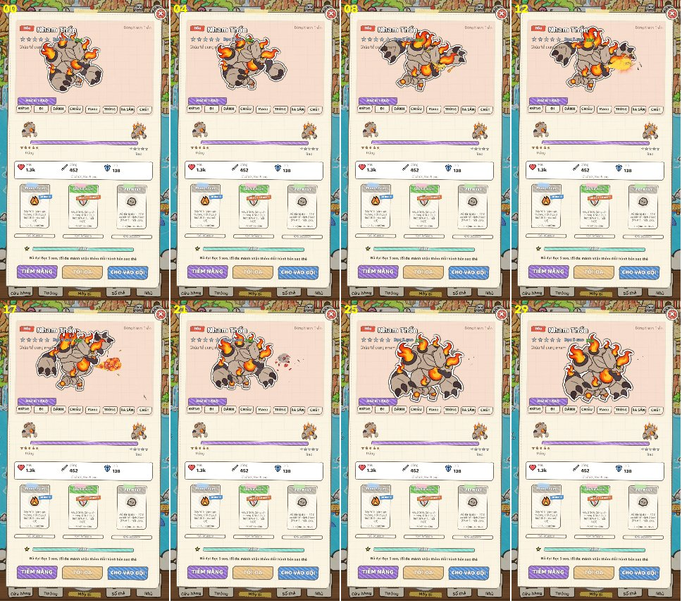

Bộ lửa Blender trong game
Ảnh chụp tour "PokiClash/Thử/Tướng/Đảo Hỏa" sau khi thay khung (2026-11-24). Mỗi ô là một khoảnh khắc của chiêu; số ở góc là thứ tự ảnh.
Phun lửa — Nham Thần, chiêu mana
Khung "phun": mép đầu vươn dần từ miệng, bầu lửa đập vào thân địch, đứt khỏi miệng rồi vỡ mảnh; 5 cụm khói ở vùng gần cuối luồng.

Cầu lửa tròn + vệt đuôi lửa → khói — Hỏa Quy, chiêu cuối
Cầu tụ ở sừng rồi bay; vệt "duoi_lua" nằm sau lớp tướng, cỡ hạt đã chặn (cầu chiêu cuối rất to).

Cầu lửa — Hỏa Sơn Long, chiêu mana

Kim lửa xoắn — Viêm Sư, chiêu mana
Khung "kim_lua" thay năm lớp ảnh kim cũ; bỏ lưỡi lửa nhỏ quanh kim.

Lốc lửa — Hỏa Nhãn, chiêu cuối
Lốc một lượt 2 s (mọc, xoắn, gió cuốn, ép về trục) trùm quanh đối thủ, lớp trước mờ.

Lửa cháy + nổ lớn — Hỏa Cung, chiêu cuối
Lửa cháy "lua_lap" mới (chân vàng, thân cam đốm đỏ, ngọn vệt trắng) rồi nổ "no" tròn ở thân địch.


Bạch Viêm Hổ, Viêm Đao — chiêu cuối


Hộp chi tiết tướng — Nham Thần
